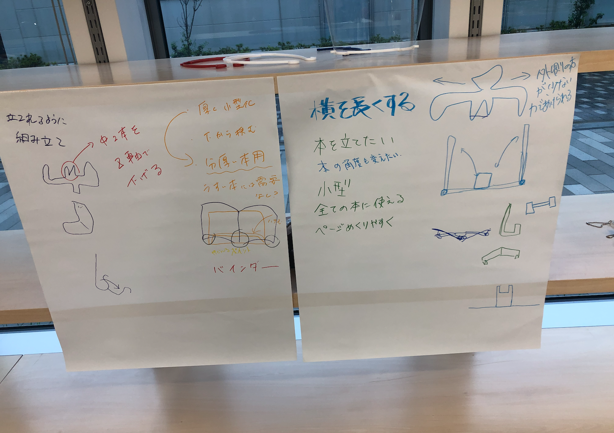
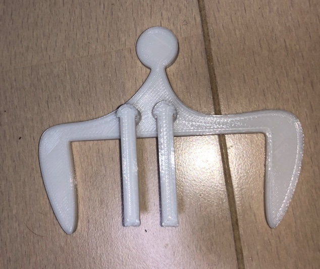
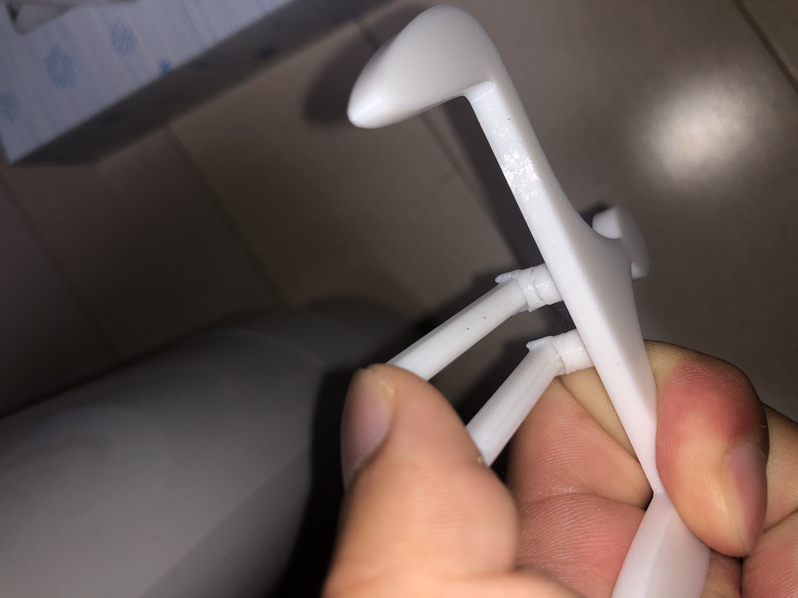

・前回の作品で、Z軸に下げればもっとスムーズに挟めるのではないかという意見をもらった。
下の二枚が改良バージョンだ。


・結果からいうと、前回の方が断然良かった。この場合の問題点は、サポートがついてしまうことと、見た目の悪さ、形状上の脆さだ。
今回のは、全体的に統一感がない上、見た目が汚い。また、Z軸に出すことで、てこの原理のかかる部分が一部に偏って壊れやすくなっている。
・前回の作品を色々な方法で試した結果、片方を先に挟み、その後に反対側を挟むことで綺麗に簡単に挟むことができた。
見た目も統一感があって、今回とは違う。ただ、スマホスタンドのような形で本を挟むなどの応用もできる。